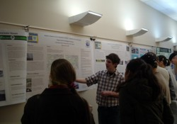

General Information
Funded by the Geoscience Education Program of the National Science Foundation, the EDGE (Experiential Discoveries in Geoscience Education) project provides a year of Earth science college courses, geologic field experiences, GIS instruction, and technical support for groups of Alaskan high and middle school teachers and their students.
The EDGE project also provides opportunities for students to present their independent research at a specially convened EDGE Symposium as well as at the Southeast Alaska Regional Science Fair for the EDGE high school students. Winners of this science fair qualify to compete in the INTEL International Science and Engineering Fair.

EDGE Broader Impact
- Since 2005 EDGE has increased the Earth science content knowledge and GIS and computer skills of 34 Alaskan teachers and facilitated the transfer of their knowledge and skills into Alaska science classrooms.
- More than 1000 middle school students and 250 high school students have learned Earth science and GIS from EDGE teachers.
- Over 100 high school students have conducted original research using GIS for studying landscape change and its impacts on their own communities.
- All middle school students in Juneau (1224 in year 2008) have the opportunity to receive GIS training and carry out local projects.
- Approximately 200 middle school students at Central and Nicholas Begich Jr, Anchorage, annually receive GIS and Earth science education as part of their 6th or 8th grade science courses.
- GIS software and computers are now available to high school students in selected Alaskan communities.
Long-term EDGE goals
- Improving student performance on the newly implemented (2007) 10th grade standards-based science test scores.
- Recruiting first-generation college students.
- Increasing the number of Earth science majors in the University of Alaska system.
EDGE received additional financial support from